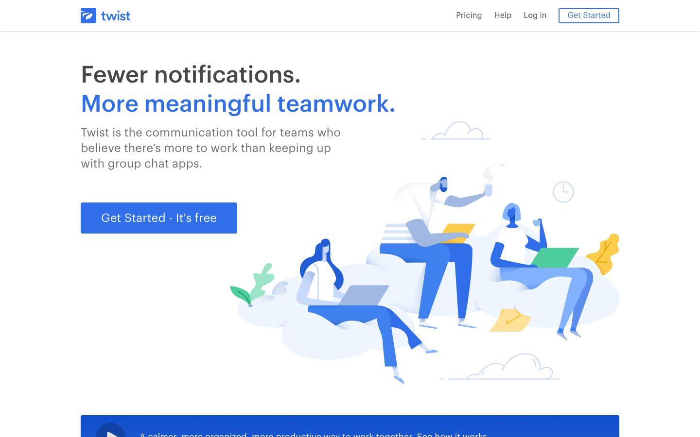

References / Website / 363
Twist website, 2018
The 2018 home page of Doist’s team chat app: blue, long-limbed figures lounge on pale cloud shapes with laptops beside a plain headline.
- Source
- Twist (archived copy)
- Creator
- Doist
- Made
- 2018 (Wayback capture of 17 October 2018)
- Style
- Corporate Memphis (agent-proposed, not yet reviewed by a person)
- Moods
- Calm, friendly, airy
- Evidence
- Captured with
tools/capture.mjs(headless Chrome, 1440 × 900) on 28 September 2026 and inspected. No cookie box covers the page. The screenshot shows the first viewport; the measurement covers up to four screens. - Reviewed
- Rights
- Third-party work, stored with credit for commentary. License: unverified. Rights policy
The live Twist site has changed since this 2018 capture.
Observed
- The headline “Fewer notifications.” is dark grey and “More meaningful teamwork.” is bright blue, in a medium-weight sans-serif.
- Below it, a square-cornered blue button reads “Get Started - It’s free”.
- To the right, three figures sit on pale blue cloud blobs with laptops. Their skin is blue or pale blue, their heads are small, and one figure’s legs are longer than its torso.
- Yellow and green accents appear as a leaf, a plant, a note, and a laptop; thin line clouds and a clock float around the scene.
- The page is white; a dark blue band starts at the bottom of the viewport.
Why it belongs
The illustration is textbook Corporate Memphis, but the interface around it is not rounded: the measurement finds a median radius of 0 and small shadows on 23% of boxes. In 2018 the style lived in the illustration, not in the CSS.
Borrow
Use one hue family for skin, clothes, and background blobs, and add a single warm accent such as yellow for objects.
Measured
Machine-extracted by tools/extract-traits.js on . Full measurement.
- Type families
- Graphik Web (100%)
- Type scale ratio
- 1.33
- Median radius
- 0 px
- Mean chroma
- 0.01
- Palette
- #ffffff 79%
- #6d6d6f 14%
- #9a9a9a 5%
- #316fea 2%
- #474747 1%

